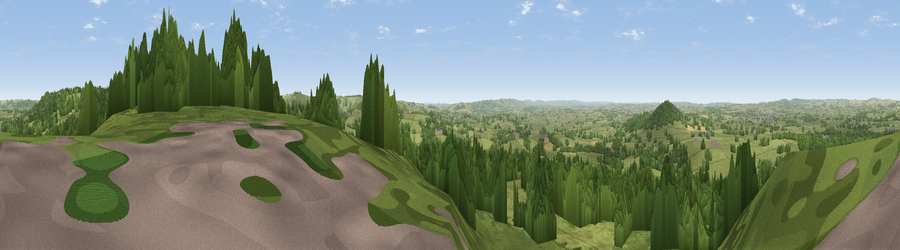

Viewpoint near Shaftesbury
#10680 in England · top 14% of its area beats it · near ShaftesburyThe view, rendered

A 360° render of this exact spot computed from the terrain model, tree cover and land cover — summer colours, afternoon light, calibrated against photographs of famous viewpoints. Real trees, hedges and buildings will differ in detail.
The panorama
Grey silhouette: terrain skyline in each direction (720 bearings, Earth curvature and refraction included). Dashed green: skyline with trees (+15 m) and buildings (+8 m) as obstacles. Blue strip: how far the ground is visible on each bearing.
Where the view opens
Wedge length = distance to the farthest visible ground on that bearing (vegetation-aware). Rings at 10, 25 and 50 km.
What fills the view
54% grassland · 41% woodland · 3% cropland · 3% built-up
Angular shares of the visible panorama (visual magnitude), not map area. Landscape diversity 0.39 (0–1 Shannon).
Key numbers
More beautiful places nearby
The staircase of upgrades: each row has a higher view potential than everything closer. Driving times are estimates from straight-line distance, calibrated against real road routing — check an actual route before setting out.
| Place | Direction | Drive | Score |
|---|---|---|---|
| Little Hill | NNE · 3 km | ~7 min | 70.0 |
| Melbury Hill | SSE · 3 km | ~8 min | 72.5 |
| Viewpoint near Berwick St John | ESE · 7 km | ~15 min | 78.2 |
| East Hill | SSW · 41 km | ~60 min | 79.6 |
| Viewpoint near Kimmeridge | S · 41 km | ~61 min | 82.9 |
| Viewpoint near Kimmeridge | S · 41 km | ~61 min | 84.1 |
| Whiteway Hill | S · 42 km | ~62 min | 85.0 |
| Rings Hill | S · 42 km | ~62 min | 87.5 |
51.00418, -2.20482 · source: screening · position refined by local search. Computed location — check access rights before visiting.